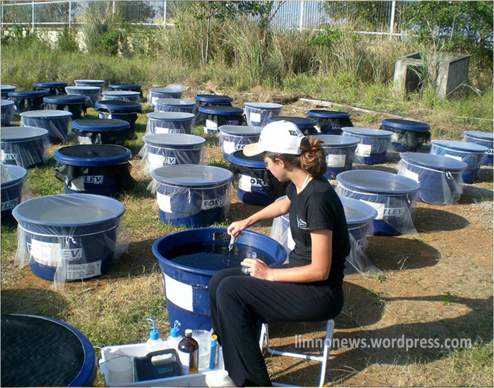

Um experimento de campo pode ser um experimento natural ou controlado. Ele ocorre em um ambiente do mundo real, em vez de em condições de laboratório. Por exemplo, um experimento envolvendo um animal em seu habitat natural seria um experimento de campo.
